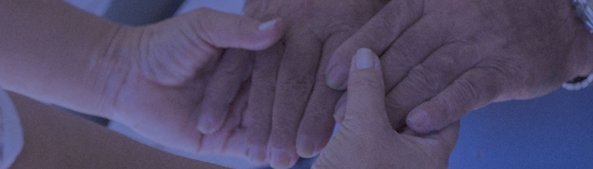
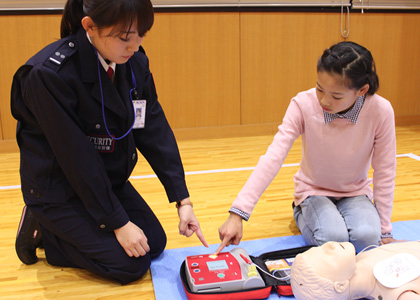
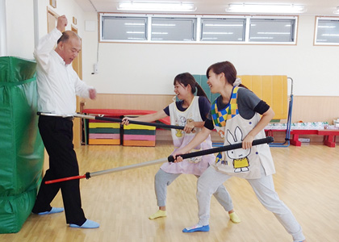
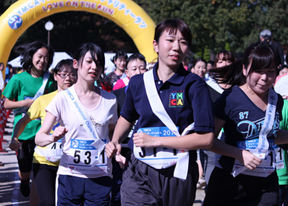
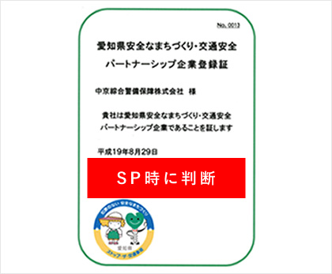
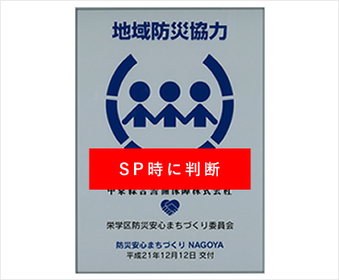
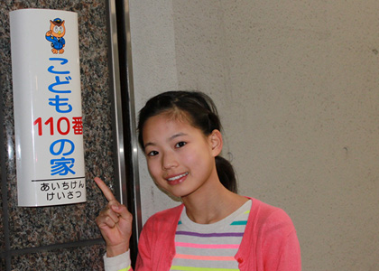
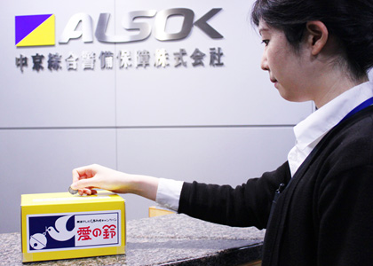
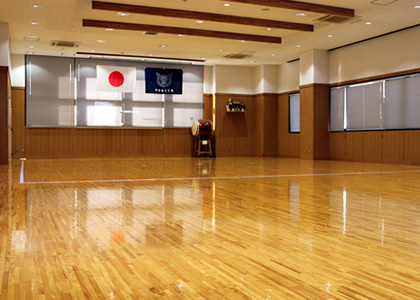
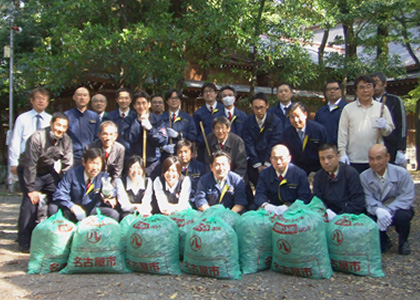

当社ではAEDをお買上げ、またはレンタルしていただいたお客様に対し、導入時の講習を実施しています。
「思いやりの心」と「一歩踏み出す勇気」で、大切な人、家族、生命を守る行動力を身に付けていただくことを目的として開催しています。

基本的な考え方
生かし生かされる
生かし生かされる
「ありがとうの心」の理念を
具体的な成果に。
地域社会の持続的な発展があるからこそ、企業は存続できます。
当社は、「社業を通じて人々に安らぎを提供し、
地域社会に必要とされる存在となる」という理念のもと、社会貢献活動を行ってきました。
私たちが日々受けている恩恵に感謝し、
お互いに生かし生かされる「ありがとうの心」の理念を、
地域社会において具体的な成果にすることも大切な企業活動の一つと考えています。
活動の取り組み分野としては、本業を通じた社会貢献に加え、
「社会福祉」、「災害援助」、「安全な街づくり」「スポーツ活動」等、
さまざまな分野で地域社会への貢献に努めています。
社会貢献の分野
私たちができる社会貢献活動
主な社会貢献活動
Major social contribution activities
-
■ AED講習会
 -
■ 防犯セミナー
地域社会の安全安心を守ることを社会的使命とする当社は、防犯セミナーを開催しています。
犯罪の事例紹介や、犯罪被害に遭わないために気を付けるべきこと、さまざまなシチュエーションで使える護身術等、実技も含めて具体的にご紹介することで、自己防衛意識を高めていただくことを目的として開催しています。 -
■ チャリティイベントへの参加
公益財団法人名古屋YMCAが主催する、心身に障がいのある子どもたちを“走って支援、寄付で支援”するイベント、「名古屋YMCAチャリティーラン」。
個人、または6人編成のチームが出場し、駅伝レースを行ないます。当社はその意義と目的を理解し、毎年有志の社員が参加しています。 -
■ 愛知県安全なまちづくり・交通安全パートナーシップ企業
犯罪のない安全な街まちづくりと交通安全の推進を愛知県と連携して行う企業として、「愛知県安全な街づくり・交通安全パートナーシップ企業」に登録しています。
愛知県が示すパートナーシップ参加プログラムに基づき、安全なまちづくり活動と交通安全活動の両方を自主的かつ積極的に行い、必要に応じて行政や警察と協力し、結果や成果について情報提供をしています。 -
■ 地域防災協力事業所の認定取得
地震等の大規模災害が発生した場合、被害をできる限り軽減し、災害の拡大を防ぐためには、行政・企業・地域の方々が力を合わせて災害に立ち向かわなければなりません。
名古屋市では「防災安心まちづくり運動」を通じて、地域ぐるみで様々な防災に関する取り組みを行っていますが、「栄学区防災安心まちづくり委員会」様との間で、の大規模災害時の支援協力に関する覚書の締結をしています。
この協定に基づき、将来予想される東海・東南海地震等の大規模災害が発生した際は、本社ビル5階体育場や機材の一部を地域住民の方々に提供いたします。 -
■ こども110番の家
「こども110番の家」は、子どもたちがトラブルに巻き込まれそうになった時に、地域の企業や家庭に駆け込み、助けを求めることにより、地域ぐるみで子どもたちを犯罪から守る活動です。
当社は、助けを求めてきた子どもを一時的に保護し、警察機関等への通報を代行することにより、地域に安全と安心を提供します。
避難者は子どもに限らず、女性や高齢者等の社会的弱者も対象となります。
犯罪被害だけでなく、例えば、「トイレを貸してほしい」「水を飲ませてほしい」等、子どもの日常における苦難にも思いやりを持って対応します。
「こども110番の家」は、警備会社の特徴を生かして24時間・365日対応可能です。 -
■ 募金活動
社会福祉法人東海テレビ福祉事業団が東海地方で展開されている「愛の鈴 しあわせキャンペーン」。
当社は福祉援助の意義を深く理解し、募金活動に参加しています。 -
■ 本社ビル施設の一般解放
本社ビル5階にある体育場は、社員だけでなく、事前にお申し込みいただければ一般の方にもご利用いただくことが可能です。
また、大規模災害発生時には、地域住民の方に緊急避難シェルターとして開放いたします。 -
■ 地域の清掃活動
地域に根差した企業を目指し、地域環境改善活動の一環として、定期的に本社周辺の清掃活動を実施しています。